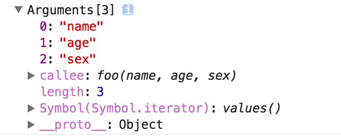

arguments 这种类数组，如何遍历类数组？
参考答案
## 类数组对象
所谓的类数组对象:
拥有一个 length 属性和若干索引属性的对象
举个例子：
var array = ['name', 'age', 'sex'];
var arrayLike = {
0: 'name',
1: 'age',
2: 'sex',
length: 3
}即便如此，为什么叫做类数组对象呢？
那让我们从读写、获取长度、遍历三个方面看看这两个对象。
读写
console.log(array[0]); // name
console.log(arrayLike[0]); // name
array[0] = 'new name';
arrayLike[0] = 'new name';长度
console.log(array.length); // 3
console.log(arrayLike.length); // 3遍历
for(var i = 0, len = array.length; i < len; i++) {
……
}
for(var i = 0, len = arrayLike.length; i < len; i++) {
……
}是不是很像？
那类数组对象可以使用数组的方法吗？比如：
arrayLike.push('4');然而上述代码会报错: arrayLike.push is not a function
所以终归还是类数组呐……
调用数组方法
如果类数组就是任性的想用数组的方法怎么办呢？
既然无法直接调用，我们可以用 Function.call 间接调用：
var arrayLike = {0: 'name', 1: 'age', 2: 'sex', length: 3 }
Array.prototype.join.call(arrayLike, '&'); // name&age&sex
Array.prototype.slice.call(arrayLike, 0); // ["name", "age", "sex"]
// slice可以做到类数组转数组
Array.prototype.map.call(arrayLike, function(item){
return item.toUpperCase();
});
// ["NAME", "AGE", "SEX"]类数组转数组
在上面的例子中已经提到了一种类数组转数组的方法，再补充三个：
var arrayLike = {0: 'name', 1: 'age', 2: 'sex', length: 3 }
// 1. slice
Array.prototype.slice.call(arrayLike); // ["name", "age", "sex"]
// 2. splice
Array.prototype.splice.call(arrayLike, 0); // ["name", "age", "sex"]
// 3. ES6 Array.from
Array.from(arrayLike); // ["name", "age", "sex"]
// 4. apply
Array.prototype.concat.apply([], arrayLike)那么为什么会讲到类数组对象呢？以及类数组有什么应用吗？
要说到类数组对象，Arguments 对象就是一个类数组对象。在客户端 JavaScript 中，一些 DOM 方法(document.getElementsByTagName()等)也返回类数组对象。
Arguments对象
接下来重点讲讲 Arguments 对象。
Arguments 对象只定义在函数体中，包括了函数的参数和其他属性。在函数体中，arguments 指代该函数的 Arguments 对象。
举个例子：
function foo(name, age, sex) {
console.log(arguments);
}
foo('name', 'age', 'sex')打印结果如下：

我们可以看到除了类数组的索引属性和length属性之外，还有一个callee属性，接下来我们一个一个介绍。
length属性
Arguments对象的length属性，表示实参的长度，举个例子：
function foo(b, c, d){
console.log("实参的长度为：" + arguments.length)
}
console.log("形参的长度为：" + foo.length)
foo(1)
// 形参的长度为：3
// 实参的长度为：1callee属性
Arguments 对象的 callee 属性，通过它可以调用函数自身。
讲个闭包经典面试题使用 callee 的解决方法：
var data = [];
for (var i = 0; i < 3; i++) {
(data[i] = function () {
console.log(arguments.callee.i)
}).i = i;
}
data[0]();
data[1]();
data[2]();
// 0
// 1
// 2接下来讲讲 arguments 对象的几个注意要点：
arguments 和对应参数的绑定
function foo(name, age, sex, hobbit) {
console.log(name, arguments[0]); // name name
// 改变形参
name = 'new name';
console.log(name, arguments[0]); // new name new name
// 改变arguments
arguments[1] = 'new age';
console.log(age, arguments[1]); // new age new age
// 测试未传入的是否会绑定
console.log(sex); // undefined
sex = 'new sex';
console.log(sex, arguments[2]); // new sex undefined
arguments[3] = 'new hobbit';
console.log(hobbit, arguments[3]); // undefined new hobbit
}
foo('name', 'age')传入的参数，实参和 arguments 的值会共享，当没有传入时，实参与 arguments 值不会共享
除此之外，以上是在非严格模式下，如果是在严格模式下，实参和 arguments 是不会共享的。
传递参数
将参数从一个函数传递到另一个函数
// 使用 apply 将 foo 的参数传递给 bar
function foo() {
bar.apply(this, arguments);
}
function bar(a, b, c) {
console.log(a, b, c);
}
foo(1, 2, 3)强大的ES6
使用ES6的 ... 运算符，我们可以轻松转成数组。
function func(...arguments) {
console.log(arguments); // [1, 2, 3]
}
func(1, 2, 3);应用
arguments的应用其实很多，在下个系列，也就是 JavaScript 专题系列中，我们会在 jQuery 的 extend 实现、函数柯里化、递归等场景看见 arguments 的身影。这篇文章就不具体展开了。
如果要总结这些场景的话，暂时能想到的包括：
- 参数不定长
- 函数柯里化
- 递归调用
- 函数重载
...
在 JavaScript 中，arguments 对象是一个类数组对象，它提供了访问函数参数的索引和长度。虽然它不是真正的数组，但可以通过一些方法来遍历它。
以下是几种遍历 arguments 对象的方法：
- 使用 for 循环：
``javascript<br> function example() {<br> for (var i = 0; i < arguments.length; i++) {<br> console.log(arguments[i]);<br> }<br> }<br> example(1, 2, 3);<br> ``
- 使用 forEach 方法：
首先将 arguments 对象转换为数组，然后使用 forEach 方法遍历。
``javascript<br> function example() {<br> Array.prototype.forEach.call(arguments, function(value, index) {<br> console.log(value);<br> });<br> }<br> example(1, 2, 3);<br> ``
- 使用 for...of 循环：
for...of 循环可以直接遍历类数组对象。
``javascript<br> function example() {<br> for (let value of arguments) {<br> console.log(value);<br> }<br> }<br> example(1, 2, 3);<br> ``
- 使用 Object.keys()：
使用 Object.keys() 方法获取 arguments 对象的键（索引），然后遍历这些键。
``javascript<br> function example() {<br> Object.keys(arguments).forEach(function(key) {<br> console.log(arguments[key]);<br> });<br> }<br> example(1, 2, 3);<br> ``
- 使用 Array.from()：
将 arguments 对象转换为真正的数组，然后使用数组的方法进行遍历。
``javascript<br> function example() {<br> Array.from(arguments).forEach(function(value) {<br> console.log(value);<br> });<br> }<br> example(1, 2, 3);<br> ``